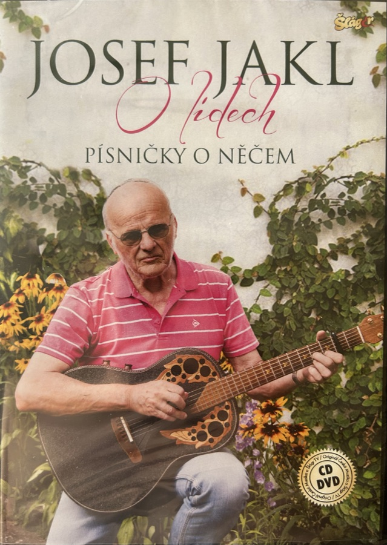
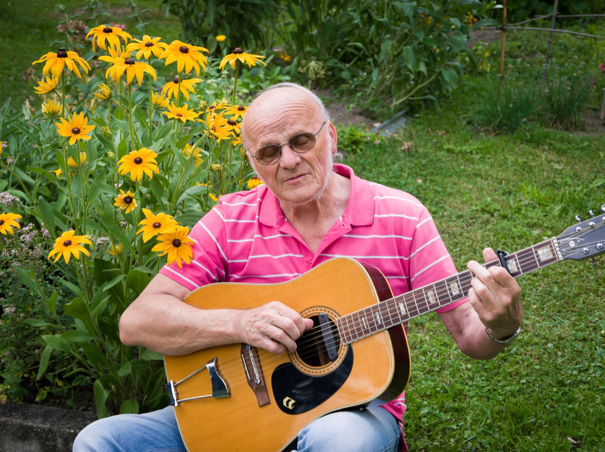

Písničky o něčem
Josef Jakl
Písničky, které mají jméno a tvář — ne o ničem, ale o něčem. Klipy, novinky, fotky i další odkazy najdete přímo tady.
Kapitola 1
Videoklipy
Patnáct písní z DVD O lidech — každá o někom nebo o něčem skutečném. Vyberte skladbu vlevo, přehraje se napravo, přesně jako na starém DVD menu.

Josefa vidíte i v televizi
Klikněte a přehraje se rovnou tady, ve stejné obrazovce jako klipy z DVD.

Josef Jakl ve své zahradě v Heřmani.Kapitola 2
Životopis
Josef Jakl se narodil 13. dubna 1942 v Chmelné pod Kletí. Vyučil se strojařem, vystudoval Střední průmyslovou školu strojní a elektrotechnickou v Českých Budějovicích a celý profesní život pak spojil se železničními opravnami v Českých Velenicích — nejdřív jako technolog a konstruktér, později jako vedoucí výrobně-technického úseku. Jako mladík patřil k nejlepším malorážkovým střelcům republiky a byl členem československé střelecké reprezentace; dodnes drží československý rekord v této disciplíně.
Po vojně založil se spolupracovníky z velenické fabriky kapelu Diskant, o pár let později, v roce 1970, kapelu Kasteláni — jejím kapelníkem a kytaristou zůstal až do roku 2000. Krátce před důchodem se pustil do svého nejvýznamnějšího vynálezu: originálního kapodastru, jehož licenci na počátku 90. let odkoupila po setkání na frankfurtském veletrhu americká firma Jima Dunlopa. S rodinou se pak přestěhoval do Heřmaně u Českých Budějovic, kde žije dodnes — a dál píše a hraje písničky, které jsou vždycky o něčem konkrétním: o lidech, místech a chvílích z vlastního života.
- Narozen
- 13. 4. 1942, Chmelná pod Kletí
- Profese
- strojírenský technik, konstruktér
- Kapela
- kapelník a kytarista skupiny Kasteláni (1970–2000)
- Vynález
- originální kapodastr — licence prodána firmě Dunlop
- Rekord
- držitel československého rekordu v malorážce
- Dnes
- žije a tvoří v Heřmani u Českých Budějovic
Kapitola 3
Koncerty
Josef hraje pravidelně — v sálech, v klubech i na besedách pro seniory, například v českobudějovickém baru London. Místo a termín konkrétního koncertu si prosím ověřte telefonicky nebo e-mailem.
Napsat nebo zavolat →Kapitola 4
Fotky
Fotky z koncertů, zkoušek i ze zahrady v Heřmani.
Kapitola 5
Kontakt
Na koncert, spolupráci nebo jen pozdravit — ozvěte se.